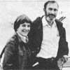
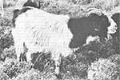

Paul Ehrlich (Bing Professor of Population Studies and Professor of Biological Sciences, Stanford University) and Anne Ehrlich (Senior Research Associate, Department of Biological Sciences, Stanford) are familiar names to ecologists and environmentalists everywhere. As well they should be. Because it was Paul and Anne who-through their writing and research-gave special meaning to the words "population", "resources", and "environment" in the late 1960's. (They also coined the term coevolu tion, and did a lot to make ecology the household word it is today.) But while most folks are aware of the Ehrlichs' popular writing in the areas of ecology and overpopulation (most of us-for instance-have read Paul's book The Population Bomb) . . . far too few people have any idea of how deeply the Ehrlichs are involved in ecological research (research of the type that tends to be published only in technical journals and college textbooks). That's why it pleases us to be able to present-on a regular basis-the following semi-technical column by authors/ecologists/educators Anne and Paul Ehrlich.
It's a common misconception that ecological problems first began to plague our planet shortly after the Second World War . . . or, at least, that such tragedies don't go back any further than the Industrial Revolution. But, in fact, our earth is strewn with evidence of past ecocatastrophes, and nowhere is our history of environmental disasters exhibited more dramatically than in the Mediterranean Basin and the Near East.
This once rich, bountiful, largely forested land includes the "Fertile Crescent" . . . an area beginning on the eastern shore of the Mediterranean Sea, curving north of the Syrian desert and then south through the Tigris and Euphrates Valleys of what is now Iraq. It was in this crescent-10,000 years ago-that agriculture was first practiced.
We recently had an opportunity to visit the Mediterranean region . . . and to see for ourselves the present state of this former "Eden" which was the cradle of Western civilization. Our overall impression was that the once rich area is now a badly deteriorated land inhabited by relatively impoverished peoples . . . who, today, are partly dependent for their survival on the influx of tourists coming to see the physical monuments of past civilizations.
The region's decline from ancient glory has been a complex process, but a major element in the "fall" has been the failure-on the part of the area's residents-to maintain the ecological systems that supported their rich cultures.
The process began with the marvelous Mesopotamian civilization, which produced the world's first cities in the area watered by the Tigris and Euphrates Rivers. The society depended utterly on a complex irrigation system that-along with the invention of the plow-allowed its farmers to extract more food from the rich soil than was required for their own families. The resultant surplus made the development of urban centers possible.
Unfortunately, however, irrigation is a temporary game. Sooner or later, silt accumulates in canals, and salts accrue in the soil . . . processes that are difficult to counter even with modern technology. Lacking the means to solve such problems-and harassed by invaders as well-the civilization of the Tigris and Euphrates valleys collapsed in the first great ecocatastrophe.
The ancient Egyptians were more fortunate than the Mesopotamians. They, too, were dependent on river water for survival, but the annual Nile flood was an enormous blessing to them. The overflowing waters deposited yearly loads of silt on the agricultural lands of the Nile Delta, simultaneously fertilizing the soil and preventing salinization. Egypt, therefore, maintained a high civilization for several thousand years, and served as a granary for Rome as late as the third century A.D.
The Greeks inherited a land covered by rich stands of oaks, pines, and other trees with thick, drought-resistant leaves . . . called a "sclerophyllous forest", in the jargon of plant ecologists. But, as the Greek population expanded, it progressively destroyed the forests for firewood, charcoal (needed in firing pottery and other industrial processes), and lumber. The great trees were often burned by accident, too . . . or as part of a military operation, or simply to create more open pastureland.
Soil erosion on the slopes of the rugged Greek hills helped prevent reforestation . . . as did grazing and browsing animals, which killed the seedlings before they could establish themselves. Especially prominent in the latter role were goats . . . the "horned locusts" that have destroyed so much of the vegetation of the Mediterranean region and other areas where they've been introduced. (In fact it's not unfair, today, to describe much of that territory as a "goatscape".
) The ancient Greeks took an essentially scientific view of their environment, and some Grecian writers saw that their land was deteriorating under human stewardship. Four centuries before Christ, Plato described Attica (the region around Athens), saying: "What now remains compared with what then existed is like the skeleton of a sick man, all the fat and soft earth having wasted away, and only the bare framework of the land being left." The description is even more apt today.
The Romans, in contrast, took a strictly utilitarian view of their environment: The land was there to be exploited by Homo Sapiens . The trend toward deforestation started in Greece and spread-during the Roman Empire-from the hills of Galilee in Palestine and the Taurus Mountains of Turkey in the east, to the mountains of Spain in the west. Various features of the Roman agricultural economy greatly encouraged this process . . . and their society had no counterbalancing conservation ethic.
Both the Egyptians and Greeks were determined hunters. They forced many larger animals (such as the lions in upper Egypt and in Greece) to extinction. But the Roman Empire had a far greater destructive impact on the fauna of the ancient world than did its predecessors. Not only were animals hunted for skins, feathers, and ivory . . . but multitudes were captured for use in "games".
Huge numbers of beasts were pitted against each other (and against human beings) in lethal combats. Titus, for example, had some 9,000 wild animals slaughtered during the three months' dedication of the Colosseum, and Trajan's conquest of Dacia (modern Romania) was celebrated by games in which 11,000 beasts were killed. When one considers that tens or even hundreds of lions, leopards, rhinos, buffalos, and so on must have died-or been killed-in transport or captivity for every one that lived to entertain the citizens, the probable scale of the Roman impact on wildlife staggers the imagination.
The Romans hit hard at their environment . . . but it struck back! Deforestation, the depletion of soils, and the exhaustion of mines were all factors in the fall of Rome's Empire. The Romans didn't finish the job, however. The last great plundering of Mediterranean forest resources occurred in the late Middle Ages, when the demand for timber for fuel and shipbuilding was very great. As a result, there's very little first-growth sclerophyllous forest left in the Mediterranean basin today . . . the best examples being in the Camargue of southern France and on the peninsula of Mt. Athos in Greece (protected by the famous monastery there).
Attempts are being made at reforestation in various areas, but-because the soil is so depleted-it's a difficult business. Aleppo pine trees are being planted in many parts of Greece, but Greek environmentalists told us that arboreal survival on the slopes is often as low as ten percent, unless tons of soil are imported with each tree . . . an inordinately expensive process.
In general, the areas of the Mediterranean basin that aren't being intensively cultivated or grazed today are covered with a community of drought-resistant shrubs called maquis . (Maquis is French for bush, and was a term used for the French resistance forces in World War II, which hid out in the bush.) Similar plant communities in the Mediterranean climate of California are known as chaparral and in Chile as matorral .
When a piece of land is denuded, vegetation usually returns in a sequence determined by the climate, soil, and evolutionary history of the area. The process is called "succession", and its final stage is the "climax". The normal successional sequence in Mediterranean climates is from bare soil to grassland to maquis to sclerophyllous forest climax. But, in most places, the succession is prevented from going to completion by such periodic disturbances as fire, erosion, harvesting for firewood, goat browsing, and so forth.
Of course, the destruction of the forests of the Mediterranean has meant more than the loss of an important renewable resource and of the animals associated with the forest. It has also triggered a shift toward a drier climate, accompanied by the disappearance of many springs and a general reduction in the availability of fresh water. Much of what was once a "land of milk and honey" has been converted into semiarid wasteland and desert.
Unfortunately, many forces seem to conspire to keep the ecological situation in most of the Mediterranean region in a state of constant deterioration. For example, the Aswan High Dam in Egypt has put an end to the Nile's soilenriching floods. As a result, farmers must purchase expensive fertilizers they can ill afford, and serious problems of salt buildup have been encountered. And the increase in food production permitted by the irrigation system drawing water from the reservoir is not enough to feed the people added to Egypt's population during its ten years of construction.
On top of that, the erection of the dam has also increased the threat of bilharzia , a serious disease caused by parasites that have snails as intermediate hosts. The snails, it seems, find the new irrigation conditions especially congenial, but so far public health measures have prevented a major increase in the percentage of people infected.
But, incredibly, some Egyptians still look to Aswan as a "solution" to their population problems . . . though Egypt is apparently doomed to double its population in the next three decades or so. And, since virtually every available inch of nondesert land is already intensively utilized, no conceivable new schemes based on Aswan could expand cultivated land fast enough and far enough . . . even if the capital and organization to attempt such expansion could be mobilized. We found the plight of Egypt's present population as desperate as the monuments of past civilizations are impressive.
In Athens, the Greeks have adopted the automobile-and other aspects of modern industry-in a big way, adding heavy air pollution to the nation's other problems . . . and that pollution attacks more than Greek lungs. It's also rapidly eroding the stone treasures of the Acropolis, which attract the millions of tourists that play a key role in the nation's economy.
Similar problems are reported in Italy, and our introduction to Spain's famous Costa del Sol was a view of many miles of shoreline crammed with hotels and apartment buildings . . . with denuded hills as backdrop. The rapidly growing resorts spew their untreated sewage into the sea and provide a most unhealthful environment for anyone foolhardy enough to take a swim.
All of the nations of the Mediterranean area have growing populations. Those of Spain, Greece, and Yugoslavia are increasing at a comparatively rapid rate for European countries. (Each will double in well under a century, unless the demographic situation changes.) Worse yet, the Arab nations of North Africa and the Middle East are mostly growing at rates that will double their sizes in 20 to 30 years. These countries' consciousness of demographic and ecological problems is, in most cases, depressingly low . . . as is their awareness of the connection between overpopulation and ecological catastrophe.
Israel, however, has a sophisticated scientific community and has proven itself to be a leader in restoring an overtaxed environment to agricultural productivity. The tiny nation might have the potential to lead the entire basin toward ecological recovery, but the present political situation makes it seem unlikely that Israel will be able to play such a role in the foreseeable future.
There is, however, some embryonic cooperation among 17 of the Mediterranean states in a project called the Blue Plan . . . the goal of which is to "save" the Mediterranean Sea. It represents a halting first step in the right direction.
One can see in the Mediterranean basin what may be a foretaste of the fate of Earth itself. A previously rich and selfsustaining region has run steadily downhill, until it can barely scrape by in increasing poverty and ecological difficulties . . . even with outside aid such as imports of food and energy. It's important that the world as a whole learn from such past ecocatastrophes. If the entire planet is allowed to deteriorate as far as has the center of ancient civilization, humanity will have no place to turn for aid.
Much of the information on the distant past is from J. Donald Hughes's excellent book, Ecology for Ancient Civilizations (University of New Mexico Press, Albuquerque, 1975). For more on Mediterranean ecology, deforestation, and population growth rates, see Ecoscience: Population, Resources, Environment by Paul R. Ehrlich, Anne H. Ehrlich, and John P. Holdren ($19.95 postpaid from W. H. Freeman and Co., Dept. TMEN, 660 Market Street, San Francisco, California 94104). For information on the Blue Plan and a series of interesting articles on the Mediterranean in general, see the special issue of Ambio, Vol. VI, No. 6, 1977 (which can be ordered from Universitetsforlaget, Dept. TMEN, P.O. Sox 142, Boston, Massachusetts 02213, for $10 per copy).
|
 The Mediterranean Basin-once a rich end self-sustaining region-has steadily deteriorated . . . partly as a result of natives improperly grazing their goats. |
 |
|